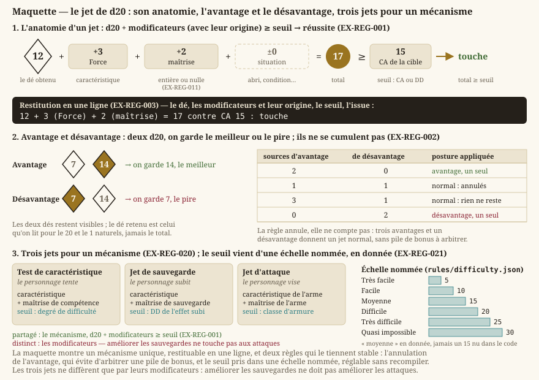

Règles d20
Statut : livré. Le dé, le jet, la difficulté, l'avantage et le désavantage, les caractéristiques et leurs modificateurs sont écrits et testés (
LOT-12), et le hasard est déterministe à graine fixée (EX-NFR-002). Restent les conditions attachées à l'agonie et à la mort (LOT-137). Dépend devision.md(cadrage : règles d20 maison) et decontenu.md(les valeurs sont des données, pas du code).
Le cadrage acté avant le LOT-01 est des règles d20 maison, compatibles SRD dans leur structure, sans en dépendre. La distinction est celle-ci : le moteur porte des mécanismes — un dé, un seuil, un modificateur, une cadence de récupération — et les valeurs viennent des données. On peut ainsi charger un catalogue issu du SRD sans que le moteur ne connaisse le SRD, et le remplacer sans réécrire une ligne de C++.
Ce document porte le socle commun : le dé, les caractéristiques, le temps et les conditions. Le combat en tire ses règles propres dans combat.md, le personnage les siennes dans rpg.md.
1. Le jet


Trois choses sur ce dessin sont des engagements, pas des illustrations : la ligne de restitution, qui existe pour chaque jet ; la table d'annulation, qui rend inutile tout arbitrage de piles de bonus ; et l'absence de tout nombre nu — chaque seuil a un nom.
- EX-REG-001 — Toute résolution incertaine passe par un d20 auquel s'ajoutent des modificateurs, comparé à un seuil de difficulté ; le résultat est une réussite si le total atteint ou dépasse le seuil. Un seul mécanisme, réutilisé par les tests, les sauvegardes et les attaques : trois résolutions différentes seraient trois occasions de diverger, et le joueur ne pourrait plus prédire ce qui va se passer.
- EX-REG-002 — L'avantage et le désavantage se résolvent en lançant deux d20 et en gardant respectivement le meilleur et le pire. Ils ne se cumulent pas : plusieurs sources d'avantage donnent un avantage, et une source d'avantage avec une source de désavantage s'annulent entièrement. Sans cette règle d'annulation, chaque nouvelle capacité ajoutée demanderait d'arbitrer sa pile de bonus contre toutes les autres.
- EX-REG-003 — Tout jet doit être restituable : le dé obtenu, les modificateurs appliqués avec leur origine, le seuil visé et l'issue. Un jeu de rôle au dé dont le joueur ne peut pas reconstituer pourquoi il a échoué se joue comme une machine à sous. C'est aussi le seul outil de diagnostic praticable quand une capacité ne s'applique pas.
2. Caractéristiques et maîtrise
- EX-REG-010 — Un personnage et une créature portent six caractéristiques (Force, Dextérité, Constitution, Intelligence, Sagesse, Charisme), dont dérive un modificateur par une règle unique et centralisée. Le modificateur est calculé, jamais stocké : deux sources de vérité pour la même valeur finissent toujours par se contredire, et c'est celle qu'on a oublié de mettre à jour qui est lue.
- EX-REG-011 — Le bonus de maîtrise dépend du niveau et de rien d'autre. Il s'applique entièrement ou pas du tout à un jet donné — jamais partiellement, sauf capacité qui le déclare explicitement. Une maîtrise au prorata serait invérifiable à la lecture d'une fiche.
- EX-REG-012 — La liste des compétences et la caractéristique associée à chacune sont une donnée, pas une énumération C++. Le moteur sait qu'une compétence est un couple (caractéristique, maîtrise éventuelle) ; il n'a pas à savoir qu'Athlétisme relève de la Force. C'est ce qui permet à un historique ou à une espèce d'accorder une maîtrise sans que le moteur connaisse ni l'un ni l'autre.
3. Trois jets, trois usages
- EX-REG-020 — Le moteur distingue le test de caractéristique (le personnage tente quelque chose), le jet de sauvegarde (le personnage subit quelque chose) et le jet d'attaque (le personnage vise quelqu'un). Ils partagent le mécanisme d'
EX-REG-001mais pas leurs modificateurs : les confondre rendrait impossible une capacité qui améliore les sauvegardes sans améliorer les attaques, c'est-à-dire la moitié des capacités défensives.
- EX-REG-021 — Un seuil de difficulté est déclaré par une échelle nommée (très facile à presque impossible), dont les valeurs sont une donnée. Aucun nombre de difficulté ne doit apparaître littéralement dans le code : régler l'équilibre du jeu ne doit pas demander de recompiler, et une valeur nue dans un
ifne dit pas ce qu'elle représente.
4. Temps, repos et récupération
- EX-REG-030 — La partie porte une horloge de jeu déterministe : le temps avance d'un nombre de pas fixe et reproductible, indépendant de la fréquence d'affichage. Une durée exprimée en heures de jeu doit s'écouler identiquement sur deux machines, faute de quoi la cadence des ressources dépendrait du matériel.
- EX-REG-031 — Le repos existe en deux formes, court et long, et chaque ressource déclare elle-même sa cadence de récupération (repos court, repos long, à volonté). Le mécanisme de repos ne connaît aucune classe en particulier. Sans cette inversion, chacun des quinze lots de classes à venir modifierait le code du repos, et la quinzième modification casserait la première.
- EX-REG-032 — Un repos interrompu ne restaure rien. Une restauration partielle serait un mécanisme de plus à spécifier, et surtout elle retirerait tout enjeu à la question « peut-on se reposer ici ? », qui est l'essentiel du campement en monde ouvert.
5. Conditions
- EX-REG-040 — Une condition n'est pas un drapeau posé sur la fiche : l'état courant est recalculé depuis ses sources, jamais accumulé. Deux sources peuvent poser « empoisonné » avec deux durées différentes ; retirer l'une ne doit pas retirer l'autre. C'est le même invariant que la classe d'armure, et il se perd de la même façon.
- EX-REG-041 — Chaque condition du catalogue doit avoir un effet observable en jeu, ou être explicitement déclarée narrative. Une condition qu'on croit implémentée et qui ne fait rien coûte bien plus cher à diagnostiquer qu'une condition déclarée non jouée.
6. Échelles
- EX-REG-050 — Toute créature porte un facteur de puissance sur une échelle unique, qui sert à la fois à doser une rencontre, à borner l'offre d'un rang de contrat et à attribuer l'expérience. Trois échelles séparées se désynchroniseraient, et c'est le dosage des rencontres qui en souffrirait en premier.
- EX-REG-051 — Une case vaut 1,5 m, en exploration comme en combat. L'échelle est commune aux deux moitiés du jeu : une portée exprimée en mètres dans une description de sort doit se convertir en cases sans arbitrage, sinon chaque bascule en combat deviendrait une renégociation des distances.